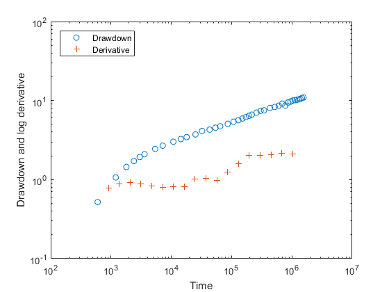
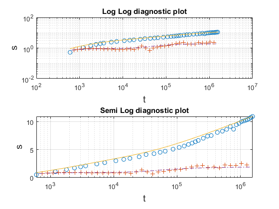
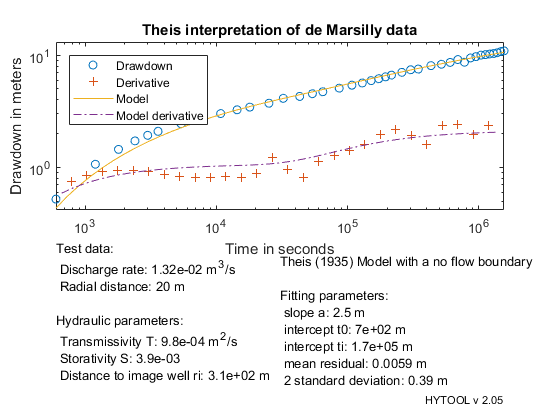

Theis no-flow boundary interpretation.
This is a demo of the interpretation of a pumping test in a confined aquifer with an impermeable boundary with the Theis solution.
Copyright 1998-2007 - Philippe Renard & Co. - GNU GENERAL PUBLIC LICENSE
Contents
Load the data
The data set for this example has been typed from: G. de Marsily, Pumping test in Niger.
Let us load the data and plot them.
[t,s]=ldf('thn_ds1.dat'); diagnostic(t,s) % The diagnostic plot shows a doubling of the derivative at a time of 1e5 % seconds indicating a possible no-flow boundary effect. We interpret the % data with the thn model.
Model parameter guess
The parameters allowing to control the Theis no-flow boundary model are the slope and intercept of the Jacob straight line that one can observe at intermediate time, and the time at which the slope of straight line doubles.
The function thn_gss allows to estimate these numbers, we then check with trial if the first guess is acceptable.
p0=thn_gss(t,s);
trial('thn',p0,t,s)
 Model fit and report
As the first guess was rather good, we proceed with the automatic fit and directly report the results of the interpretation.
p=fit('thn',p0,t,s); q=0.0132; % Pumping rate in m3/s r=20; % radial distance in m thn_rpt(p,t,s,[q,r],'Theis interpretation of de Marsilly data')
Norm of Norm of
Iteration SSE Gradient Step
-----------------------------------------------------------
0 11.536
1 3.29254 50.6263 55429.9
2 1.85101 20.9463 71553.5
3 1.50432 4.38998 48011.8
4 1.48287 0.50611 14973.6
5 1.48193 0.148741 6173.39
6 1.48183 0.00622565 1760.04
7 1.48182 0.00802669 698.962
8 1.48182 0.00178267 218.09
9 1.48182 0.000767944 79.5379
10 1.48182 0.000234137 26.2035
11 1.48182 8.57519e-05 9.20265
Iterations terminated: relative change in SSE less than OPTIONS.TolFun
 The estimated transmissivity is 9.8e-4 m2/s, the storativity is 3.9e-3, and the distance to the image well is 310 m. These numbers are close to the estimation provided by de Marsily.
T = 1.0e-3 [m2/s] S = 3.7 e-3 ri = 287 m